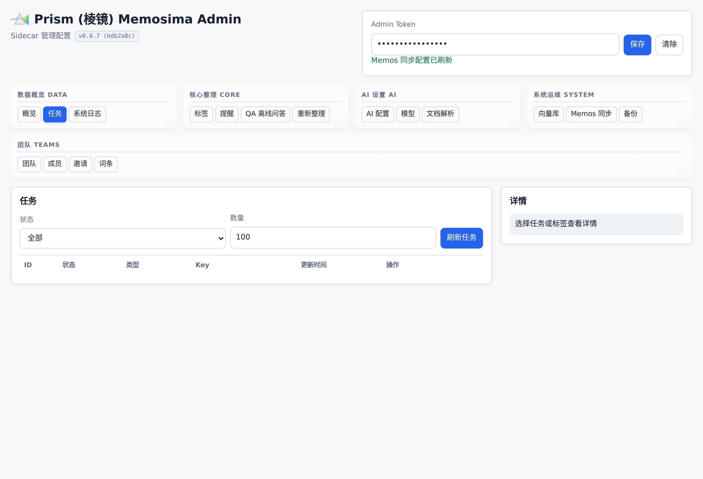

基于 Memos 的个人 AI 知识库系统详细设计与开发计划
1. 架构总览与核心设计理念
针对“类腾讯 IMA”的加强版 AI 知识库需求，本方案基于开源项目 usememos/memos 作为前端 UI 和基础数据存储基座。Memos 是一款隐私优先的轻量级备忘录系统，原生支持 Markdown、多级标签以及 API 优先设计。
核心设计：旁路微侵入式架构 (Sidecar Architecture)
利用 Memos 极其完善的 API 设计和内置的 Webhook 功能，我们使用 Python 编写一个独立的“AI 助理微服务”。该服务在后台静默运行，充当“数字大脑”，实现对零散知识的智能标签化、自动化文档汇聚以及全局知识库的交互问答。
2. 项目的核心目标与特别之处
为了明确系统的核心定位与竞争优势，本项目确立了以下核心目标与具备颠覆性的技术特质：
2.1 项目的核心目标
- 化零为整，沉淀数字资产：日常工作和学习中产生了大量碎片化、非结构化信息（如随手的备忘录、截图、会议语音片段、文档），传统做法容易导致“收藏即遗忘”。本项目的首要目标是通过大模型将这些散落的碎片自动提取、分类，并按树形逻辑汇聚成排版清晰、可读性强的标准文档。
- 打造绝对私有化的“类腾讯 IMA”体验：对标腾讯 IMA 的核心产品力——即“会思考、会回答问题的知识图书馆”与基于个人知识的精准问答（支持原文溯源）。但不同于公有云产品，本系统完全由个人或小团队私有化部署，确保核心知识、商业机密和个人思考数据的绝对隐私。
- 极低成本的快速开发与轻量运行：避免动辄使用庞大的微服务集群和图数据库，以极简的单体旁路架构，在一个月内快速验证并上线系统，且能运行在配置极低的个人云服务器上。
2.2 项目的特别之处（核心竞争优势）
- 微侵入式旁路架构（Sidecar Architecture）：相比于从零开发前后端或者对庞大的开源项目进行痛苦的魔改，本方案选择了一条非常讨巧且健壮的路线。它直接利用了 Memos 完善的 API 优先设计（API-First Design）。通过监听 Webhook，将 Python 编写的 AI 引擎作为“旁路助理”挂载在主系统外部。前端依旧保持轻量优雅，而复杂的 AI 梳理逻辑在后台静默完成，不破坏原生软件的稳定性。
- 极简的纯本地向量引擎（摒弃重型数据库）：为了实现全局 RAG 问答，通常需要引入沉重的外部向量数据库。本系统的特别之处在于直接在 SQLite 中引入了
sqlite-vec扩展。这意味着系统的元数据与高维向量数据都安全地保存在本地单一的.db文件中，同时依然能获得毫秒级的 KNN 和语义相似度检索能力，做到了极致的轻量化和极高的可移植性。 - 首创“先查后建”的动态标签树体系：市面上大部分 RAG 系统会将文章粗暴地切分为无语义的文本块，这对人类直接阅读极不友好。本系统打破这一常规，利用多级标签体系构建知识网。AI 在处理新信息时，必须先读取当前的全局标签树，优先归入已有标签；在缺乏匹配时才拓展新标签，从而防止系统内标签无限繁殖导致的混乱。
- 人机在环（HITL）主动澄清机制：本系统不是一个单纯的“黑盒自动化”工具。依托底层图状态引擎（如 LangGraph）提供的
interrupt()动态中断能力，当用户输入的零星信息缺少关键上下文、产生歧义或大模型置信度偏低时，系统会主动暂停执行，并在 Memos 中以“评论”的方式向用户发起提问。只有在用户回复澄清后，AI 才会恢复执行状态，确保入库知识的绝对准确。 - 大一统的多模态边界突破：系统集成了由微软开源的现象级工具
MarkItDown。这一特别设计使系统具备了通吃一切常见格式的能力。无论是带复杂表格的 Excel、含有公式的 PDF、ZIP 压缩包，还是包含 EXIF 信息的图片，系统只需一条指令即可将其全部转化为高质量的结构化 Markdown，彻底消除了多格式文档解析的开发壁垒。
3. 核心功能需求说明
为了彻底解决知识分片对人类阅读不友好的问题，本系统将以“多级标签机制”和“动态文档生成”为核心，并引入严谨的交互澄清机制。
3.1 动态多级标签树与人工优先机制
- 摒弃无语义分片：去除对人类极不友好的传统数据分块（Chunking）方式，改为纯标签驱动。
- 树形标签体系：全面采用多级树形标签（例如
#项目A/前端/支付模块）。这既符合人类的心智模型，也为 AI 提供了天然的结构化坐标体系。 - 强制人工定义：系统支持管理员或用户强制预设并定义标签树结构。人工划定的层级与分类拥有最高优先级，AI 必须在该规则框架下运作。
3.2 智能“先查后建”标签机制
- 上下文感知的标签分配：当用户输入一段新的零散内容时，大模型必须先通过 API 读取当前系统内已有的全局标签树。
- 优先匹配旧标签：如果现有标签（如
#项目B/会议记录）与内容高度契合，AI 将直接使用旧标签，防止标签无限繁殖导致系统混乱。 - 智能拓展新标签：只有在现有标签树均不匹配时，AI 才会生成最贴切的新标签（允许同时生成多个相关标签实现交叉引用），并将其自动挂载到标签树的最合理节点下。

#tags）—— 3.1「人工优先」体现在 config/taxonomy.yaml + 数据库 active 标签合并；3.2「先查后建」由下方候选队列承接 AI 提议，必须由人工通过/拒绝。3.3 基于标签的自动化文档生成
- 从碎片到结构化阅读：零散的输入不再只是堆砌。系统可基于特定标签，将名下的所有零碎内容由 AI 串联、润色，重写生成一篇结构完整、连贯的标准文档。
- 层级化配置策略：文档生成支持灵活配置。用户可以全局或手动配置“每级标签下的文档是否自动生成”。例如：配置为只对一级和二级标签（如
#项目A、#项目A/需求）每日定时生成/更新总览文档，而第三级以下标签则作为原始素材池保留碎片形态。

#prompts）—— 标签级文档生成所用的 tag_summary Prompt 模板在此热修改；策略层（每日/每周触发）由 config/taxonomy.yaml 控制。3.4 人机在环澄清机制 (Human-in-the-Loop Clarification)
- 拒绝强行入库：当用户输入的零碎内容存在明显的逻辑缺失、指代不明，或者大模型无法确定其应该归属的标签层级时，系统将触发中断机制。
- 反问与确认：AI 会通过调用 Memos API（例如在该条笔记下自动回复一条评论）向用户明确提出疑问：“您提到的‘网关配置’是指归入 #架构/生产环境 还是 #架构/测试环境？缺少端口信息，请补充。”
- 状态闭环：该内容将被标记为
#待澄清。只有在用户回复并补充信息后，AI 才会恢复执行，完成最终的标签生成与内容规整。

#jobs）—— 待澄清的 memo 对应 waiting_user 状态，用户在 Memos 评论补充后由 worker 轮询自动恢复处理。4. 核心功能实现逻辑（工作流）
4.1 零碎内容的智能梳理与澄清
- 触发机制：用户随手输入杂乱文本并发送。Memos 触发 Webhook。
- 智能处理与拦截：
- Python 服务截获内容，结合“系统全局标签树”状态发送给大模型。
- 若内容不清晰，大模型触发“澄清分支”，Python 服务通过
POST /api/v1/memos/{memo}/comments接口向原笔记写入 AI 的询问。流程暂停。 - 若内容清晰，大模型返回排版后的 Markdown 以及匹配/生成好的标签组。
- Python 服务通过 API 新建 AI 整理 memo，并与原始 memo 建立关联；不覆盖原始 memo。
4.2 标签树文档自动生成 (Auto-Documentation)
- 定时或触发式聚合：后台利用
APScheduler每天定时轮询（或通过点击前端特定的“生成文档”按钮触发）。 - 聚合生成逻辑：系统读取用户配置（例如：“开启二级标签
#项目A/产品设计的自动文档生成”）。Python 脚本抓取该标签下的所有零散笔记，喂给大模型并要求：“请将这些零散记录融合成一篇层次分明的产品设计文档”。 - 文档归档：生成的长文档将作为一条包含独立大标签（如
#归档文档/项目A_产品设计）的新 Memo 存入系统，供直接阅读或导出。
4.3 全局知识库问答
- 虽然去除了物理的无语义文本切片，但在问答检索时，系统依然会在后台将完整的长文和零碎笔记通过
sqlite-vec进行向量化存储。 - 用户输入包含
#问答标签的问题后，系统不仅通过向量相似度检索相关内容，还会利用多级标签的层次关系召回同标签下的补充信息，交由大模型生成准确解答，并附带原文链接溯源。

#qa）—— 4.3 描述的「向量检索 + 标签层级召回」最终落地为这个超级 Prompt 编译器；标签选择 + 向量开关 + 关键字三路融合后一键复制。5. 技术栈配置详单
- 知识库基座：
usememos/memos(自带 SQLite，支持多级树形标签与 API)。 - 旁路 AI 后端：
Python 3.10++FastAPI(接收 Webhook 与处理后台定时任务)。 - 大模型网关：
LiteLLM(支持动态配置 OpenAI、DeepSeek、本地模型等)。 - 多模态文件解析：
markitdown[all](微软开源工具，负责将 Word、PDF、图片精准转为 Markdown 并保留结构)。 - 拓扑图与绘图：采用外置 draw.io 导出
.drawio.svg。Memos 原生支持 SVG 展示，当需要修改时下载原图通过 draw.io 打开即可编辑，保持系统极简。
6. 实施与开发计划（周期预估：3 - 4 周）
第一阶段：基座搭建与 API 联调（第 1 周）
- 部署 Memos 容器实例，创建初始管理员账号。
- 搭建 Python 旁路应用，配置 FastAPI 监听 Webhook 接口。
- 编写 Memos API 客户端，跑通获取系统现有标签列表、读取笔记、更新笔记、发表评论的基础功能。
第二阶段：标签匹配、澄清机制与文件转换（第 2 周）
- 智能标签机制：开发大模型 Prompt 模板，在输入新内容时，强制大模型优先匹配上游拉取到的“系统现有标签树”，实现“先查后建”。
- 人机澄清功能开发：编写判断逻辑，当大模型置信度低或缺少关键信息时，将 AI 的反馈作为评论插入 Memos，并标注状态等待用户二次输入。
- 文档解析：集成
MarkItDown，实现多格式附件向纯 Markdown 文本的自动转化。
第三阶段：文档自动生成与全局问答（第 3 周）
- 基于标签生成文档：开发配置模块（定义哪些标签开启文档生成）。编写聚合调度任务，提取同标签下所有笔记生成聚合式长文档。
- 基于 sqlite-vec 的问答检索：在本地建立
vector.db。编写定时脚本将结构化后的笔记进行向量化。实现“用户提问 -> 本地库召回 -> AI 整合答案 -> 写回 Memos”的问答闭环体验。
第四阶段：可用性优化与交付（第 4 周）
- 完善在生成新标签时的数据校验，确保标签名符合 Memos 支持的
#父级/子级规范。 - 测试并优化“不清楚则询问”的灵敏度，防止 AI 过于频繁地打断人类用户。
- 编写系统备份脚本及操作使用手册，正式上线。
7. 附录：Memos API (v1) 接口整体情况说明
Memos 的设计理念为“API优先（API-First）”，其暴露出的完善 API 使得旁路挂载 AI 微服务成为可能。以下是开发本项目涉及的核心 API 接口规范与支持情况：
7.1 基础请求规范
- 接口基地址（Base URL）：API 默认服务于 Memos 实例的
/api/v1路径下（例如：https://your-memos-instance.com/api/v1）。 - 鉴权方式（Authentication）：采用标准的
Bearer 令牌验证。所有对私密数据的请求需在 HTTP 头中携带：Authorization: Bearer<空格><访问令牌>。 - 通用参数：列表查询类接口原生支持分页（通过
pageSize和pageToken控制）以及特定的filter过滤参数。
7.2 核心业务服务模块划分
Memos 将 API 依据功能模块划分为多个底层 Service：
- Memo Service：负责笔记核心内容的增删改查。
- Attachment Service / Resource Service：处理图片、PDF 等静态附件的上传与元数据管理。
- User Service & Auth Service：用于多用户/管理员的配置、身份核验。
- Instance Service：获取或修改全站级别的实例设置。
- Shortcut Service：快捷方式及查询视图的管理。
7.3 Python AI 旁路服务主要使用的关键端点 (Endpoints)
本系统的 AI 自动整理、澄清追问与标签提取，主要依赖以下高频调用的 Memo Service 接口：
- 读取与同步知识
GET /api/v1/memos：获取/搜索笔记列表（支持传入 filter 以拉取特定标签或特定用户的全量数据，用于同步至sqlite-vec向量库）。GET /api/v1/memos/{uid}：获取某一特定笔记的详细内容，包括解析附带的文件资源。
- 创建与更新知识
POST /api/v1/memos：由大模型将零碎总结为“聚合长文档”时，通过此接口在系统中创建全新排版规整的笔记。PATCH /api/v1/memos/{uid}：针对原有的乱七八糟的笔记内容，在 AI 梳理完成后，通过此接口将其正文覆写为结构化的 Markdown，并更新与之绑定的多级标签。
- 关系梳理与互动确认 (HITL 机制)
POST /api/v1/memos/{memo}/reactions：添加笔记内的回应或互动状态。GET/PATCH /api/v1/memos/{memo}/relations：查询或更新两篇笔记之间的关联关系，用于将 AI 拆解出的新内容与父节点进行树形关联。- (注：当发生需要人工介入澄清的情况时，Python 会利用评论接口向该条备忘录下方写入追问提示。)
Source: https://gemini.google.com/app/b45b9ea1d1da7a5b Exported at: 2026-05-18T09:18:07.115Z